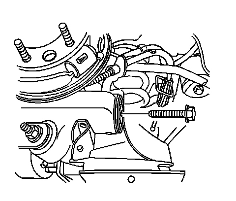
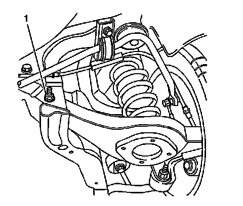

Lower Control Arm Replacement
Lower Control Arm Replacement
Removal Procedure
1. Raise and support the vehicle. Refer to Lifting and Jacking the Vehicle (Service and Repair) .
2. Remove the tire and wheel. Refer to Tire and Wheel Removal and Installation (Service and Repair) .
3. Remove the stabilizer shaft link lower retaining nut.
4. Disconnect the stabilizer shaft link from the lower control arm.
5. Remove the rear coil spring. Refer to Coil Spring Replacement (Coil Spring Replacement) .

6. Remove the lower control arm to knuckle bolt.

7. Remove the lower control arm to frame bolt and nut (1).
8. Remove the lower control arm.
Installation Procedure
1. Install the lower control arm to the vehicle.
Important: Loosely install all fasteners before tightening.
2. Install the lower control arm to frame bolt and nut (1).
3. Install the lower control arm to knuckle bolt.
4. Install the rear coil spring. Refer to Coil Spring Replacement (Coil Spring Replacement) .
Notice: Refer to Fastener Notice (Fastener Notice) .
5. Tighten the following fasteners:
* Tighten the lower control arm to frame bolt to 135 N.m (100 lb ft).
* Tighten the lower control arm to frame nut to 135 N.m (100 lb ft).
* Tighten the lower control arm to knuckle bolt to 160 N.m (118 lb ft).
6. Connect the stabilizer shaft link to the lower control arm.
7. Install the stabilizer shaft link lower retaining nut.
8. Install the tire and wheel. Refer to Tire and Wheel Removal and Installation (Service and Repair) .
9. Lower the vehicle. Refer to Lifting and Jacking the Vehicle (Service and Repair) .